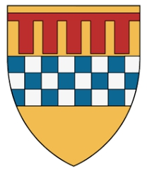
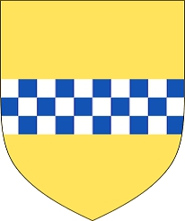

751113 Countess Joan Menteith
* omkring 1295 Menteith, Pearthshire, Scotland
† efter 1367 Stratheam, Perthshire, Scotland
Grevinna av Strathearn & Atholl
* omkring 1295 Menteith, Pearthshire, Scotland
† efter 1367 Stratheam, Perthshire, Scotland
Grevinna av Strathearn & Atholl
1502226 Sir John (Stewart) de Menteith of Rusky & Knapdale
* omkring 1265 Menteith, Pearthshire, Scotland
† omkring 1323 Menteith, Pearthshire, Scotland
Sheriff of Dunbarton
Blev ca 58 år
* omkring 1265 Menteith, Pearthshire, Scotland
† omkring 1323 Menteith, Pearthshire, Scotland
Sheriff of Dunbarton
Blev ca 58 år

3004452 Earl Walter Bailloch Stewart of Menteith
* omkring 1230
† 1296-04-28
Greve av Menteith
Blev ca 66 år
* omkring 1230
† 1296-04-28
Greve av Menteith
Blev ca 66 år

12017732 High Steward of Scotland Walter Stewart
* 1198
† 1246 Dundonald Castle, Ayrshire, Scotland
3rd High Steward of Scotland
Blev högst 48 år
* 1198
† 1246 Dundonald Castle, Ayrshire, Scotland
3rd High Steward of Scotland
Blev högst 48 år

6008905 Beatrix of Angus
* omkring 1174 Angus, Forfarshire, Scotland
†
* omkring 1174 Angus, Forfarshire, Scotland
†
3004453 Countess Mary of Menteith
† före 1286
Grevinna av Menteith
† före 1286
Grevinna av Menteith

6008906 Earl Muireadhack II of Menteith
† före 1234 Perth, Perthshire, Scotland
Greve av Menteith, Sheriff of Striling
† före 1234 Perth, Perthshire, Scotland
Greve av Menteith, Sheriff of Striling
1502227 Marjorie de Strivelyn
* omkring 1268 Ochiltree Castle, Ayrshire, Scotland
† omkring 1323
Blev ca 55 år
* omkring 1268 Ochiltree Castle, Ayrshire, Scotland
† omkring 1323
Blev ca 55 år